规定初始像素覆盖已通过独立数据验收，完整12步与物理安全未通过。Prescribed initial pixel coverage passes the independent DATA audit; full12-step and physical acceptance remain incomplete. Original1280×720; no edits/crop. Every image below is INITIAL, not micro1/final.
{"seed": 1, "proposal_id": 2240, "global_id": 16576, "family": 0}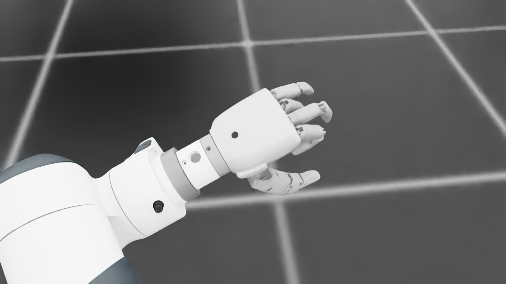
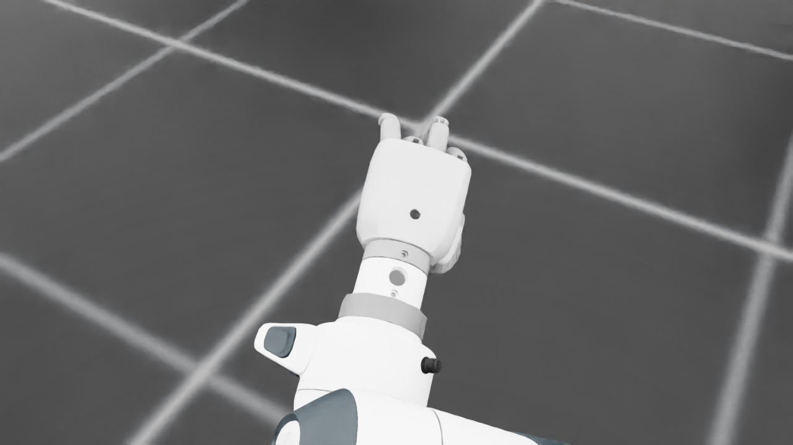
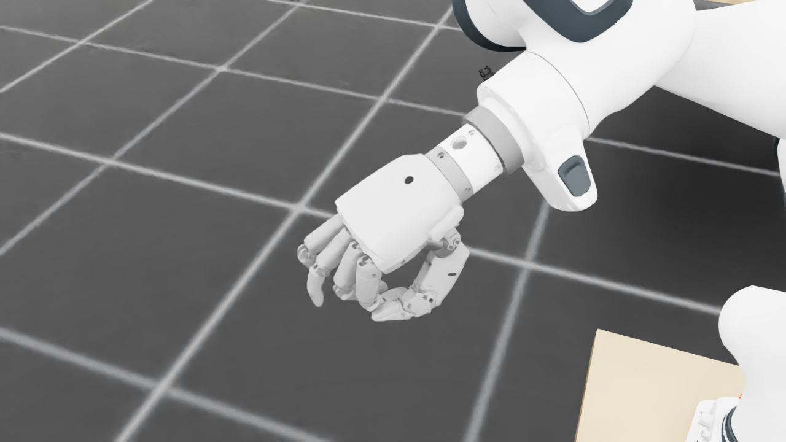
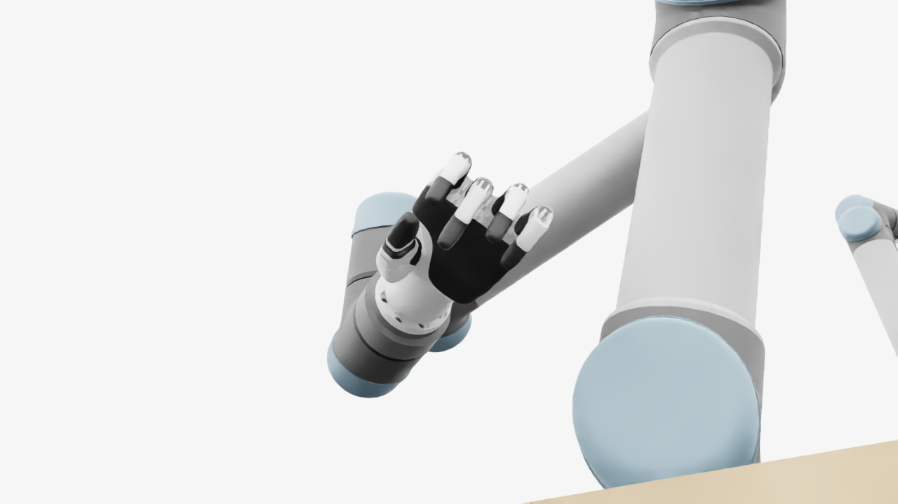
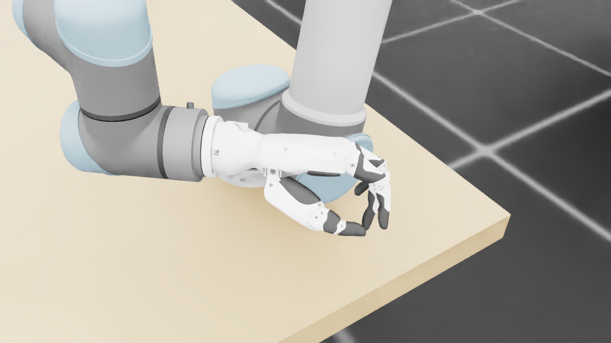
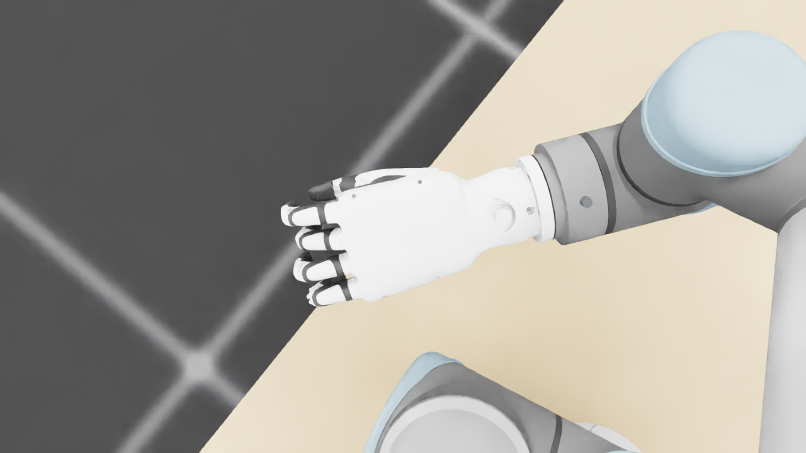
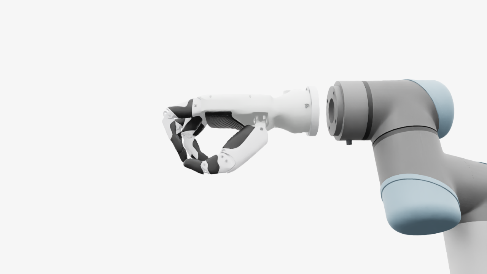
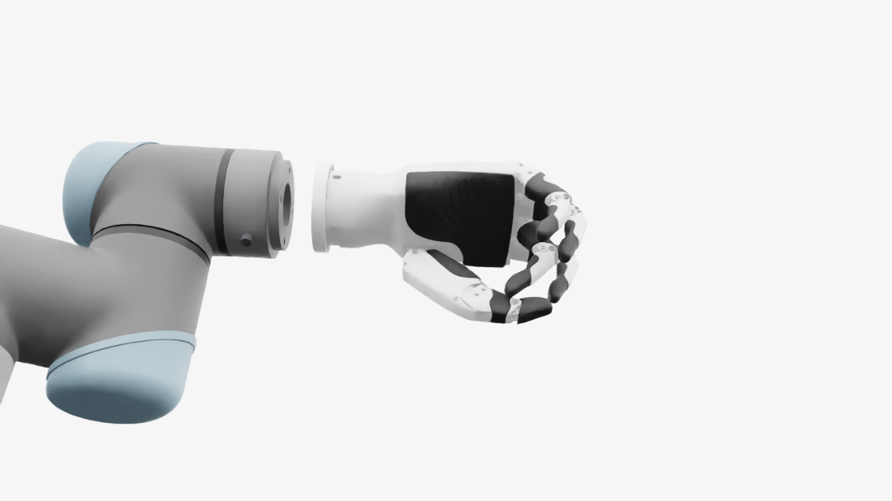
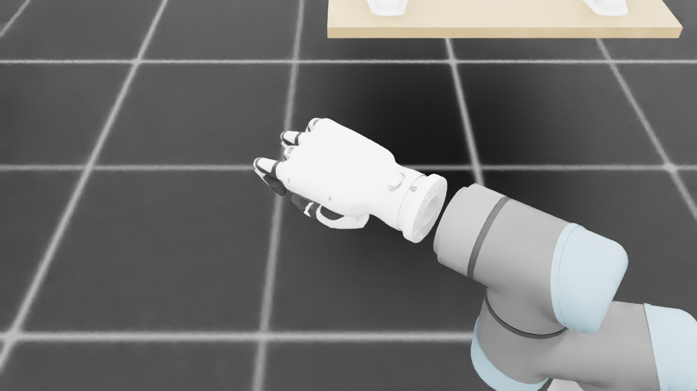
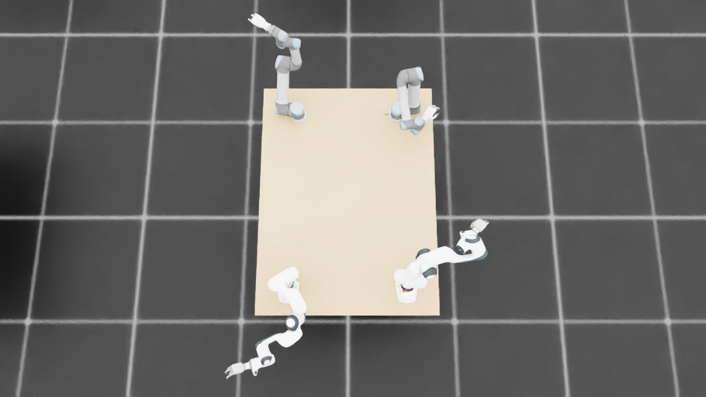
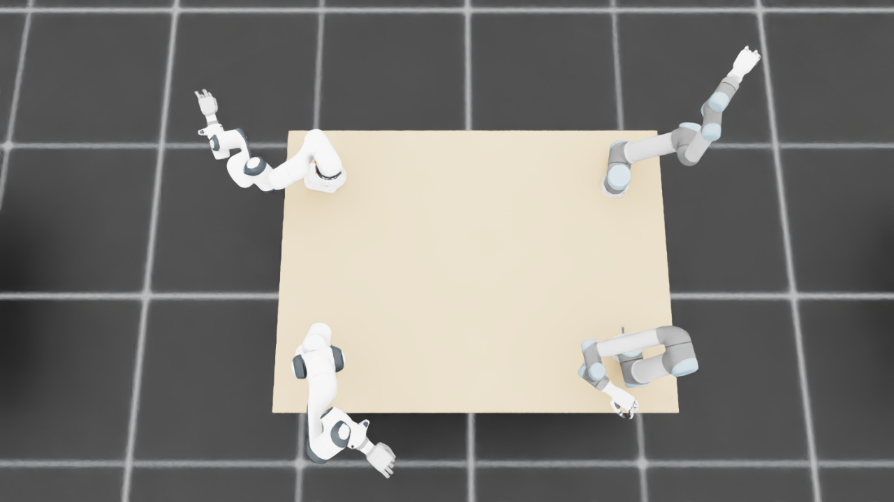
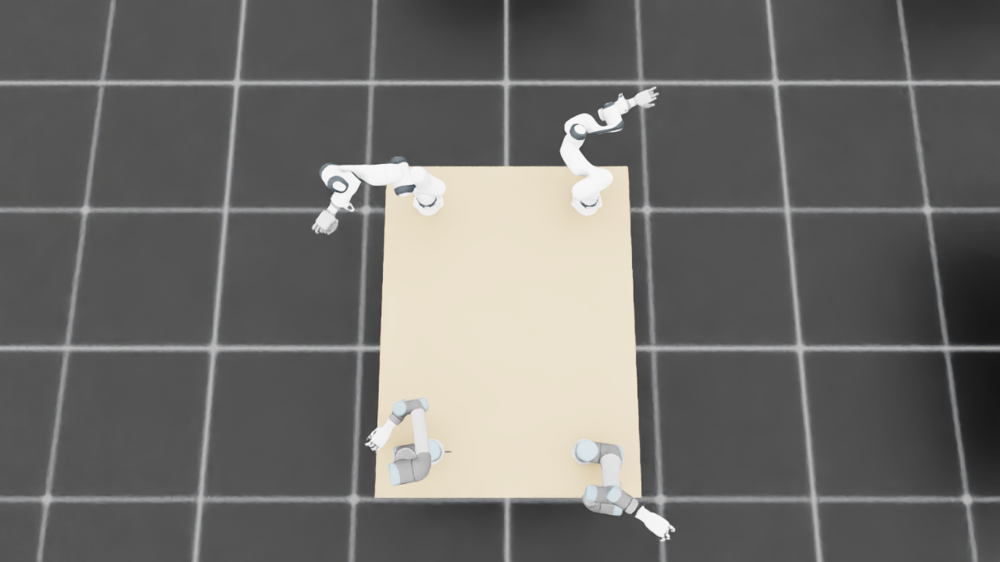
{
"qualified": true,
"arms": {
"F_L": {
"qualified": true,
"palm_visual_peak_pixels": 36701,
"finger_family_peak_pixels": {
"thumb": 8266,
"index": 3772,
"middle": 6274,
"ring": 3231,
"little": 7783
},
"per_native_body_peak_pixels": {
"/World/envs/env_9/F_L/f2_hand/left_hand_base": 44459,
"/World/envs/env_9/F_L/f2_hand/left_index_1": 2283,
"/World/envs/env_9/F_L/f2_hand/left_middle_1": 3116,
"/World/envs/env_9/F_L/f2_hand/left_pinky_1": 4903,
"/World/envs/env_9/F_L/f2_hand/left_ring_1": 1373,
"/World/envs/env_9/F_L/f2_hand/left_thumb_1": 196,
"/World/envs/env_9/F_L/f2_hand/left_index_2": 1489,
"/World/envs/env_9/F_L/f2_hand/left_middle_2": 3158,
"/World/envs/env_9/F_L/f2_hand/left_pinky_2": 2880,
"/World/envs/env_9/F_L/f2_hand/left_ring_2": 1972,
"/World/envs/env_9/F_L/f2_hand/left_thumb_2": 4969,
"/World/envs/env_9/F_L/f2_hand/left_thumb_3": 1872,
"/World/envs/env_9/F_L/f2_hand/left_thumb_4": 1474
},
"native_body_visibility_gaps": [],
"all_native_hand_bodies_observed": true,
"full_mesh_coverage_certified": false,
"all_recorded_attempt_peak": {
"qualified": false,
"palm_visual_peak_pixels": 36701,
"finger_family_peak_pixels": {
"thumb": 12382,
"index": 6661,
"middle": 6274,
"ring": 4576,
"little": 7783
},
"per_native_body_peak_pixels": {
"/World/envs/env_9/F_L/f2_hand/left_hand_base": 44459,
"/World/envs/env_9/F_L/f2_hand/left_index_1": 3975,
"/World/envs/env_9/F_L/f2_hand/left_middle_1": 3116,
"/World/envs/env_9/F_L/f2_hand/left_pinky_1": 4903,
"/World/envs/env_9/F_L/f2_hand/left_ring_1": 2246,
"/World/envs/env_9/F_L/f2_hand/left_thumb_1": 1119,
"/World/envs/env_9/F_L/f2_hand/left_index_2": 2686,
"/World/envs/env_9/F_L/f2_hand/left_middle_2": 3158,
"/World/envs/env_9/F_L/f2_hand/left_pinky_2": 2880,
"/World/envs/env_9/F_L/f2_hand/left_ring_2": 2330,
"/World/envs/env_9/F_L/f2_hand/left_thumb_2": 6215,
"/World/envs/env_9/F_L/f2_hand/left_thumb_3": 2776,
"/World/envs/env_9/F_L/f2_hand/left_thumb_4": 2272
},
"native_body_visibility_gaps": [],
"all_native_hand_bodies_observed": true,
"full_mesh_coverage_certified": false,
"qualification": false
},
"attempts": 8,
"decoded": 8
},
"F_R": {
"qualified": true,
"palm_visual_peak_pixels": 28099,
"finger_family_peak_pixels": {
"thumb": 9394,
"index": 3691,
"middle": 4328,
"ring": 3887,
"little": 4299
},
"per_native_body_peak_pixels": {
"/World/envs/env_9/F_R/f2_hand/right_hand_base": 34219,
"/World/envs/env_9/F_R/f2_hand/right_index_1": 2588,
"/World/envs/env_9/F_R/f2_hand/right_middle_1": 2221,
"/World/envs/env_9/F_R/f2_hand/right_pinky_1": 2833,
"/World/envs/env_9/F_R/f2_hand/right_ring_1": 2373,
"/World/envs/env_9/F_R/f2_hand/right_thumb_1": 701,
"/World/envs/env_9/F_R/f2_hand/right_index_2": 1850,
"/World/envs/env_9/F_R/f2_hand/right_middle_2": 2187,
"/World/envs/env_9/F_R/f2_hand/right_pinky_2": 1466,
"/World/envs/env_9/F_R/f2_hand/right_ring_2": 1645,
"/World/envs/env_9/F_R/f2_hand/right_thumb_2": 5219,
"/World/envs/env_9/F_R/f2_hand/right_thumb_3": 2020,
"/World/envs/env_9/F_R/f2_hand/right_thumb_4": 1630
},
"native_body_visibility_gaps": [],
"all_native_hand_bodies_observed": true,
"full_mesh_coverage_certified": false,
"all_recorded_attempt_peak": {
"qualified": false,
"palm_visual_peak_pixels": 28099,
"finger_family_peak_pixels": {
"thumb": 9394,
"index": 3691,
"middle": 4328,
"ring": 3887,
"little": 5164
},
"per_native_body_peak_pixels": {
"/World/envs/env_9/F_R/f2_hand/right_hand_base": 34219,
"/World/envs/env_9/F_R/f2_hand/right_index_1": 2588,
"/World/envs/env_9/F_R/f2_hand/right_middle_1": 2221,
"/World/envs/env_9/F_R/f2_hand/right_pinky_1": 3264,
"/World/envs/env_9/F_R/f2_hand/right_ring_1": 2373,
"/World/envs/env_9/F_R/f2_hand/right_thumb_1": 880,
"/World/envs/env_9/F_R/f2_hand/right_index_2": 1850,
"/World/envs/env_9/F_R/f2_hand/right_middle_2": 2187,
"/World/envs/env_9/F_R/f2_hand/right_pinky_2": 1900,
"/World/envs/env_9/F_R/f2_hand/right_ring_2": 1645,
"/World/envs/env_9/F_R/f2_hand/right_thumb_2": 5219,
"/World/envs/env_9/F_R/f2_hand/right_thumb_3": 2020,
"/World/envs/env_9/F_R/f2_hand/right_thumb_4": 1630
},
"native_body_visibility_gaps": [],
"all_native_hand_bodies_observed": true,
"full_mesh_coverage_certified": false,
"qualification": false
},
"attempts": 4,
"decoded": 4
},
"U_L": {
"qualified": true,
"palm_visual_peak_pixels": 10876,
"finger_family_peak_pixels": {
"thumb": 12509,
"index": 5890,
"middle": 3119,
"ring": 3203,
"little": 3355
},
"per_native_body_peak_pixels": {
"/World/envs/env_9/U_L/wrist_3_link": 65132,
"/World/envs/env_9/U_L/left_index_1": 3568,
"/World/envs/env_9/U_L/left_little_1": 2508,
"/World/envs/env_9/U_L/left_middle_1": 2222,
"/World/envs/env_9/U_L/left_ring_1": 2563,
"/World/envs/env_9/U_L/left_thumb_1": 632,
"/World/envs/env_9/U_L/left_index_2": 2322,
"/World/envs/env_9/U_L/left_little_2": 2359,
"/World/envs/env_9/U_L/left_middle_2": 2726,
"/World/envs/env_9/U_L/left_ring_2": 2294,
"/World/envs/env_9/U_L/left_thumb_2": 7533,
"/World/envs/env_9/U_L/left_thumb_3": 2947,
"/World/envs/env_9/U_L/left_thumb_4": 1610
},
"native_body_visibility_gaps": [],
"all_native_hand_bodies_observed": true,
"full_mesh_coverage_certified": false,
"all_recorded_attempt_peak": {
"qualified": false,
"palm_visual_peak_pixels": 10876,
"finger_family_peak_pixels": {
"thumb": 14765,
"index": 6695,
"middle": 5785,
"ring": 6575,
"little": 5810
},
"per_native_body_peak_pixels": {
"/World/envs/env_9/U_L/wrist_3_link": 65132,
"/World/envs/env_9/U_L/left_index_1": 3762,
"/World/envs/env_9/U_L/left_little_1": 3709,
"/World/envs/env_9/U_L/left_middle_1": 2722,
"/World/envs/env_9/U_L/left_ring_1": 3179,
"/World/envs/env_9/U_L/left_thumb_1": 632,
"/World/envs/env_9/U_L/left_index_2": 3457,
"/World/envs/env_9/U_L/left_little_2": 2359,
"/World/envs/env_9/U_L/left_middle_2": 3619,
"/World/envs/env_9/U_L/left_ring_2": 3396,
"/World/envs/env_9/U_L/left_thumb_2": 8418,
"/World/envs/env_9/U_L/left_thumb_3": 3700,
"/World/envs/env_9/U_L/left_thumb_4": 2186
},
"native_body_visibility_gaps": [],
"all_native_hand_bodies_observed": true,
"full_mesh_coverage_certified": false,
"qualification": false
},
"attempts": 20,
"decoded": 20
},
"U_R": {
"qualified": true,
"palm_visual_peak_pixels": 17604,
"finger_family_peak_pixels": {
"thumb": 14122,
"index": 6315,
"middle": 4141,
"ring": 2962,
"little": 4320
},
"per_native_body_peak_pixels": {
"/World/envs/env_9/U_R/wrist_3_link": 52662,
"/World/envs/env_9/U_R/right_index_1": 3605,
"/World/envs/env_9/U_R/right_little_1": 2486,
"/World/envs/env_9/U_R/right_middle_1": 2082,
"/World/envs/env_9/U_R/right_ring_1": 1096,
"/World/envs/env_9/U_R/right_thumb_1": 699,
"/World/envs/env_9/U_R/right_index_2": 2710,
"/World/envs/env_9/U_R/right_little_2": 1834,
"/World/envs/env_9/U_R/right_middle_2": 2311,
"/World/envs/env_9/U_R/right_ring_2": 1866,
"/World/envs/env_9/U_R/right_thumb_2": 8281,
"/World/envs/env_9/U_R/right_thumb_3": 3561,
"/World/envs/env_9/U_R/right_thumb_4": 1620
},
"native_body_visibility_gaps": [],
"all_native_hand_bodies_observed": true,
"full_mesh_coverage_certified": false,
"all_recorded_attempt_peak": {
"qualified": false,
"palm_visual_peak_pixels": 17604,
"finger_family_peak_pixels": {
"thumb": 14122,
"index": 6822,
"middle": 4141,
"ring": 3334,
"little": 6214
},
"per_native_body_peak_pixels": {
"/World/envs/env_9/U_R/wrist_3_link": 55775,
"/World/envs/env_9/U_R/right_index_1": 4038,
"/World/envs/env_9/U_R/right_little_1": 4065,
"/World/envs/env_9/U_R/right_middle_1": 2082,
"/World/envs/env_9/U_R/right_ring_1": 2191,
"/World/envs/env_9/U_R/right_thumb_1": 919,
"/World/envs/env_9/U_R/right_index_2": 2784,
"/World/envs/env_9/U_R/right_little_2": 2149,
"/World/envs/env_9/U_R/right_middle_2": 2429,
"/World/envs/env_9/U_R/right_ring_2": 2010,
"/World/envs/env_9/U_R/right_thumb_2": 8281,
"/World/envs/env_9/U_R/right_thumb_3": 3561,
"/World/envs/env_9/U_R/right_thumb_4": 1621
},
"native_body_visibility_gaps": [],
"all_native_hand_bodies_observed": true,
"full_mesh_coverage_certified": false,
"qualification": false
},
"attempts": 7,
"decoded": 7
}
},
"wide": {
"qualified": true,
"per_native_object_peak_pixels": {
"/World/envs/env_9/F_L/fr3_link0": 1509,
"/World/envs/env_9/F_L/fr3_link1": 1281,
"/World/envs/env_9/F_L/fr3_link2": 2175,
"/World/envs/env_9/F_L/fr3_link3": 1198,
"/World/envs/env_9/F_L/fr3_link4": 1877,
"/World/envs/env_9/F_L/fr3_link5": 1311,
"/World/envs/env_9/F_L/fr3_link6": 874,
"/World/envs/env_9/F_L/fr3_link7": 416,
"/World/envs/env_9/F_L/fr3_link8": 80,
"/World/envs/env_9/F_L/f2_hand/left_hand_base": 675,
"/World/envs/env_9/F_L/f2_hand/left_index_1": 30,
"/World/envs/env_9/F_L/f2_hand/left_middle_1": 43,
"/World/envs/env_9/F_L/f2_hand/left_pinky_1": 39,
"/World/envs/env_9/F_L/f2_hand/left_ring_1": 27,
"/World/envs/env_9/F_L/f2_hand/left_thumb_1": 0,
"/World/envs/env_9/F_L/f2_hand/left_index_2": 2,
"/World/envs/env_9/F_L/f2_hand/left_middle_2": 21,
"/World/envs/env_9/F_L/f2_hand/left_pinky_2": 21,
"/World/envs/env_9/F_L/f2_hand/left_ring_2": 3,
"/World/envs/env_9/F_L/f2_hand/left_thumb_2": 36,
"/World/envs/env_9/F_L/f2_hand/left_thumb_3": 16,
"/World/envs/env_9/F_L/f2_hand/left_thumb_4": 15,
"/World/envs/env_9/F_R/fr3_link0": 999,
"/World/envs/env_9/F_R/fr3_link1": 602,
"/World/envs/env_9/F_R/fr3_link2": 747,
"/World/envs/env_9/F_R/fr3_link3": 1571,
"/World/envs/env_9/F_R/fr3_link4": 1825,
"/World/envs/env_9/F_R/fr3_link5": 3735,
"/World/envs/env_9/F_R/fr3_link6": 2406,
"/World/envs/env_9/F_R/fr3_link7": 671,
"/World/envs/env_9/F_R/fr3_link8": 136,
"/World/envs/env_9/F_R/f2_hand/right_hand_base": 1114,
"/World/envs/env_9/F_R/f2_hand/right_index_1": 21,
"/World/envs/env_9/F_R/f2_hand/right_middle_1": 39,
"/World/envs/env_9/F_R/f2_hand/right_pinky_1": 64,
"/World/envs/env_9/F_R/f2_hand/right_ring_1": 55,
"/World/envs/env_9/F_R/f2_hand/right_thumb_1": 3,
"/World/envs/env_9/F_R/f2_hand/right_index_2": 18,
"/World/envs/env_9/F_R/f2_hand/right_middle_2": 3,
"/World/envs/env_9/F_R/f2_hand/right_pinky_2": 10,
"/World/envs/env_9/F_R/f2_hand/right_ring_2": 20,
"/World/envs/env_9/F_R/f2_hand/right_thumb_2": 82,
"/World/envs/env_9/F_R/f2_hand/right_thumb_3": 41,
"/World/envs/env_9/F_R/f2_hand/right_thumb_4": 40,
"/World/envs/env_9/U_L/base_link": 183,
"/World/envs/env_9/U_L/shoulder_link": 491,
"/World/envs/env_9/U_L/upper_arm_link": 4249,
"/World/envs/env_9/U_L/forearm_link": 3948,
"/World/envs/env_9/U_L/wrist_1_link": 704,
"/World/envs/env_9/U_L/wrist_2_link": 308,
"/World/envs/env_9/U_L/wrist_3_link": 1111,
"/World/envs/env_9/U_L/left_index_1": 61,
"/World/envs/env_9/U_L/left_little_1": 43,
"/World/envs/env_9/U_L/left_middle_1": 37,
"/World/envs/env_9/U_L/left_ring_1": 51,
"/World/envs/env_9/U_L/left_thumb_1": 5,
"/World/envs/env_9/U_L/left_index_2": 31,
"/World/envs/env_9/U_L/left_little_2": 7,
"/World/envs/env_9/U_L/left_middle_2": 17,
"/World/envs/env_9/U_L/left_ring_2": 16,
"/World/envs/env_9/U_L/left_thumb_2": 126,
"/World/envs/env_9/U_L/left_thumb_3": 50,
"/World/envs/env_9/U_L/left_thumb_4": 29,
"/World/envs/env_9/U_R/base_link": 361,
"/World/envs/env_9/U_R/shoulder_link": 1375,
"/World/envs/env_9/U_R/upper_arm_link": 3832,
"/World/envs/env_9/U_R/forearm_link": 2394,
"/World/envs/env_9/U_R/wrist_1_link": 226,
"/World/envs/env_9/U_R/wrist_2_link": 1094,
"/World/envs/env_9/U_R/wrist_3_link": 1332,
"/World/envs/env_9/U_R/right_index_1": 43,
"/World/envs/env_9/U_R/right_little_1": 34,
"/World/envs/env_9/U_R/right_middle_1": 19,
"/World/envs/env_9/U_R/right_ring_1": 41,
"/World/envs/env_9/U_R/right_thumb_1": 0,
"/World/envs/env_9/U_R/right_index_2": 15,
"/World/envs/env_9/U_R/right_little_2": 21,
"/World/envs/env_9/U_R/right_middle_2": 0,
"/World/envs/env_9/U_R/right_ring_2": 15,
"/World/envs/env_9/U_R/right_thumb_2": 4,
"/World/envs/env_9/U_R/right_thumb_3": 0,
"/World/envs/env_9/U_R/right_thumb_4": 0,
"/World/envs/env_9/TableF": 101121,
"/World/envs/env_9/TableU": 99142
},
"arm_peak_pixels": {
"F_L": 11602,
"F_R": 12497,
"U_L": 11351,
"U_R": 10742
},
"table_peak_pixels": {
"TableF": 101121,
"TableU": 99142
},
"critical_body_peak_pixels": {
"/World/envs/env_9/U_L/forearm_link": 3948,
"/World/envs/env_9/U_L/wrist_2_link": 308,
"/World/envs/env_9/U_R/forearm_link": 2394,
"/World/envs/env_9/U_R/wrist_2_link": 1094
}
},
"raw_attempt_count": 52,
"PNG_count": 52,
"angle_records": 52,
"max_actual_angle_identity_error_deg": 0.0,
"held_snapshot_checks": 684,
"universal_visibility_impossible": false,
"full_mesh_coverage_certified": false
}